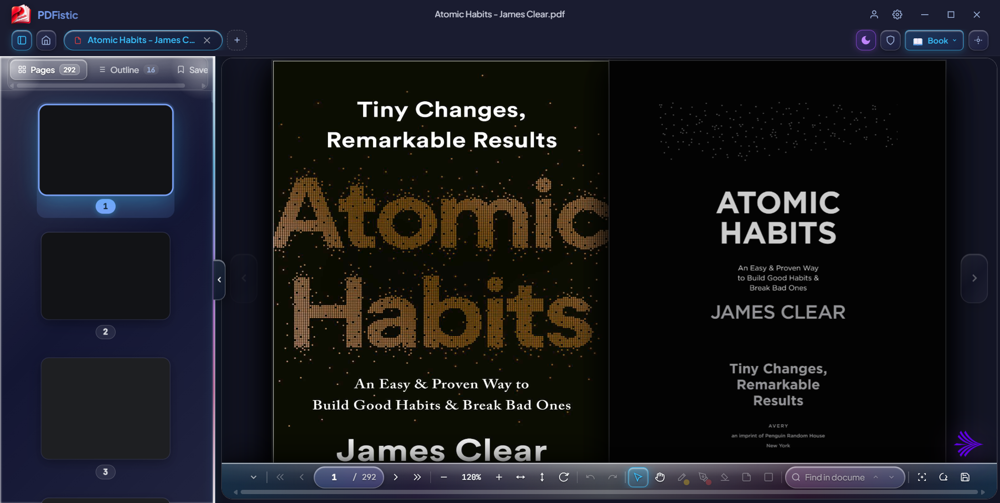
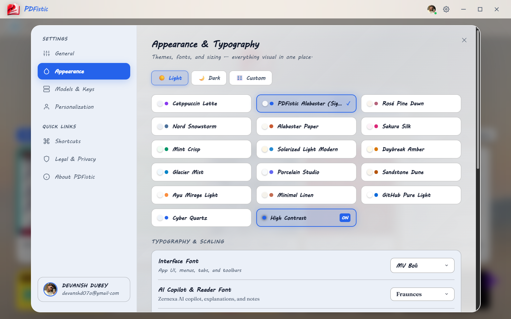

The short version
PDFistic runs on your PC and works out of the box without an account or an internet connection. If something does not work as expected or you have questions, reach me directly on GitHub or by email.
1. Getting started
Drag and drop any PDF or EPUB directly into PDFistic, or press Ctrl + O to open a file. The document opens directly in memory on your PC.
- Document tabs: Open multiple documents in separate tabs, each with independent zoom, page state, and navigation history.
- Recent files: The launchpad remembers your recent files locally so you can resume where you left off.
- Offline by default: You do not need to configure keys, create an account, or connect to the internet to read and annotate files.
2. Setting default reader on Windows 11
To make PDFistic your primary PDF reader on Windows 11 so that double-clicking any PDF opens it directly:
Right-click any PDF
Right-click any .pdf file inside Windows File Explorer.
Choose PDFistic
Click Open with → Choose another app and pick PDFistic.
Lock as default
Check “Always use this app to open .pdf files” and click OK.
Alternatively, open Windows Settings (Win + I), go to Apps → Default apps, search for PDFistic, and select it for the .pdf extension.
3. Reader modes
PDFistic includes two reading engines designed for different types of reading:
- Continuous scroll mode: Vertical scrolling designed for research papers, documentation, and technical reports. Supports text selection, line-by-line highlighting, freehand pen notes, and shape callouts.
- 3D book-flip mode: Realistic page-turn simulation with two-page spread viewing and natural transitions, well-suited for novels and EPUB books.

4. Keyboard shortcuts
Common shortcuts for fast reading and annotating:
| Shortcut | Action |
|---|---|
| Ctrl + O | Open file dialog |
| Ctrl + W | Close current active document tab |
| Ctrl + F | Open in-document search bar |
| Ctrl + \ | Toggle split document comparison view |
| Ctrl + / | Toggle AI Copilot panel |
| Alt + 1 .. 5 | Switch tools (Select, Pen, Highlight, Shapes, Eraser) |
| Ctrl + Z / Ctrl + Y | Undo / Redo annotation stroke |
| Ctrl + , | Open Application Settings |
5. Free AI keys guide
The optional AI Copilot can answer questions about your documents, summarize text, or explain complex passages. You can use free API keys from Google or Groq:
- Google Gemini: Visit aistudio.google.com/app/apikey, sign in with your Google account, click Create API Key, and copy the key.
- Groq Cloud: Visit console.groq.com/keys, create a free account, click Create API Key, and copy the key.
- Saving your key in PDFistic: Press
Ctrl + ,to open Settings, go to AI & Keys, and paste your key. On Windows, keys are encrypted using Windows Data Protection API (DPAPI) and tied to your Windows user account.

6. Feature tour replay
If you skipped or want to revisit the interactive walkthrough that introduces the reading modes, annotation tools, and keyboard shortcuts:
Open PDFistic, press Ctrl + , to open Settings, navigate to the About section, and click Feature Tour. The interactive walkthrough will begin immediately.
7. Frequently asked questions
%APPDATA%\pdfistic (or the package data folder under %LOCALAPPDATA%\Packages for Microsoft Store installs). That removes all settings, recent file history, and stored API keys.
8. Bug reports and contact
If you encounter a bug, a file that does not open correctly, or want to suggest a feature, you can contact me directly or open an issue:
- GitHub Issue Tracker: github.com/devanshd07o/PDFISTIC-v2/issues
- Email: devanshdubey2004@gmail.com
- Repository: github.com/devanshd07o/PDFISTIC-v2
When reporting a bug, including your Windows version and the steps to reproduce the issue helps me resolve it quickly.